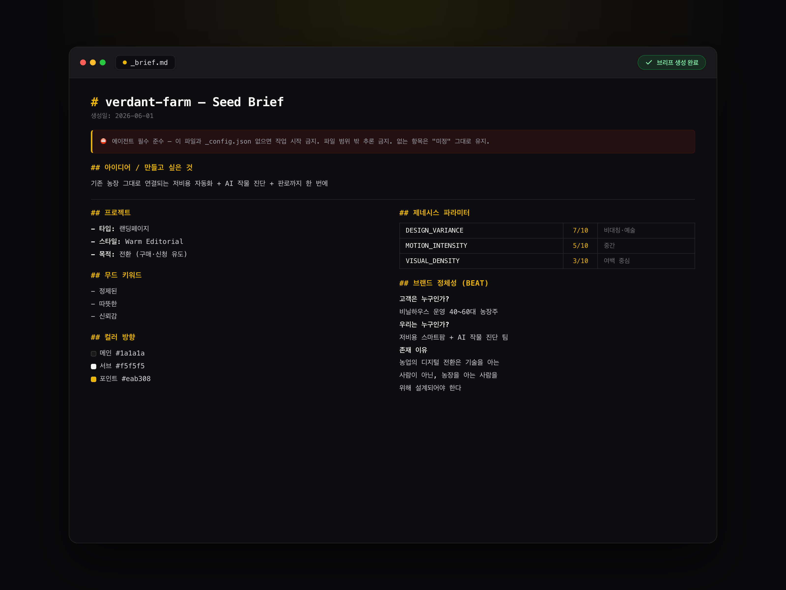

01 The Input
How You Ask Changes the Result
에이전트를 바꾸는 대신, 에이전트에게 주는 걸 바꿨어요.
TOMOB SEED는 AI 에이전트에게 넘길 인풋을 구조화하는 도구예요. 브랜드 이야기·레퍼런스·무드를 단계별로 물어보고, 에이전트가 바로 읽을 수 있는 입력 파일로 떨궈요.
다른 제품을 운영하다가 나온 도구예요. 결과물이 흔들릴 때마다 더 좋은 모델을 찾았는데, 문제는 계속 모델 앞쪽에 있었어요.

AI가 잘 작동하도록 만드는 인풋 구조화 도구.
01 The Input
에이전트를 바꾸는 대신, 에이전트에게 주는 걸 바꿨어요.
TOMOB SEED는 AI 에이전트에게 넘길 인풋을 구조화하는 도구예요. 브랜드 이야기·레퍼런스·무드를 단계별로 물어보고, 에이전트가 바로 읽을 수 있는 입력 파일로 떨궈요.
다른 제품을 운영하다가 나온 도구예요. 결과물이 흔들릴 때마다 더 좋은 모델을 찾았는데, 문제는 계속 모델 앞쪽에 있었어요.
02 Diagnosis
같은 에이전트를 두 곳에 넣었는데 결과가 달랐어요.
모델도 같고 프롬프트도 같은데 한쪽만 잘 나왔어요. 차이는 제가 넘긴 재료였어요. 잘 나온 쪽은 레퍼런스와 핵심 메시지가 정리돼 있었고, 아닌 쪽은 "세련된 느낌으로"가 전부였어요.
"세련되게"는 해석의 여지가 수십 가지예요. 그럼 에이전트는 매번 다르게 해석하고, 저는 매번 다시 시켰어요.
AI에게 0→90을 시키는 게 아니라, 내가 0→10을 만들면 AI가 10→90을 빠르게 채워요. 그게 Harness Engineering이에요.
03 The Method
사람에게 묻는 순서를 정한 게 이 도구의 전부예요.
기능은 단순해요. 브랜드 정보를 정해진 순서로 묻고, 그 답을 에이전트가 읽기 좋은 파일로 떨궈요. 어려운 건 기술이 아니라 무엇을 어떤 순서로 물을지였어요.


04 Same Agent, Different Input
왼쪽과 오른쪽은 같은 에이전트에 넣은 서로 다른 재료예요.
바뀐 건 모델도 프롬프트도 아니에요. 넘긴 재료뿐이에요. 그런데 나온 결과의 차이는 그 무엇보다 컸어요.
"세련된 느낌으로 만들어줘" · "젊은 감성의 브랜딩" · "고급스러우면서도 친근하게" · 레퍼런스는 구두 설명 · 타겟은 "20–30대 여성".
핵심 메시지는 확정 문장 · 타겟 페르소나는 구체적 설명 · 스타일 레퍼런스는 파일 경로 · 무드 레퍼런스는 분리된 파일 · 금지 방향은 명시적 제한.
05 Why I Built It
Notion 폼으로 두 번 시도하고 접었어요.
Notion 템플릿과 구글폼으로 먼저 해봤어요. 답은 모이는데 에이전트가 읽을 형식으로 바꾸는 일을 결국 제가 손으로 하고 있었어요.
그리고 질문 순서는 폼 도구가 정해줄 수 있는 게 아니었어요. 에이전트를 실제로 굴려본 사람만 어디서 결과가 흔들리는지 알거든요. 그래서 직접 만들었어요.

06 What Changed
프롬프트를 잘 쓰는 게 실력이라고 생각했었어요.
지시문을 다듬는 데 시간을 쓰다가, 결국 재료를 정리하는 쪽이 훨씬 크게 먹힌다는 걸 알았어요. 지금은 브리프 없이 에이전트를 켜지 않아요.